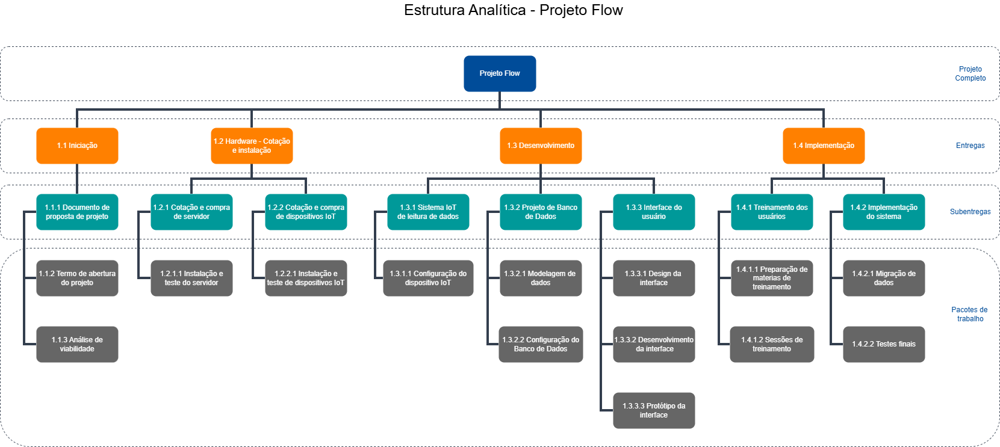

Progresso real
Status Report / Dashboard RA3
Projeto Flow
Painel executivo de acompanhamento do projeto com base na planilha atualizada do Gantt, contemplando progresso, prazo, custo, entregas, riscos, impedimentos e plano de recuperação.
Carregando...
0%
concluído
Atualizando dados...
Prazo
30/06
19 dias restantesCusto revisado
R$ 115.945,80
Inclui reserva de contingênciaEntregas concluídas
0/0
tarefas da EAPLegenda
Significado das cores
Azul / CianoInformação geral, progresso real, filtro ativo e barras principais do cronograma.
VerdeAtividade concluída, entrega realizada ou situação dentro do esperado.
Amarelo / LaranjaAtenção, atividade em andamento, referência planejada ou item crítico a acompanhar.
Vermelho / RosaAtraso, risco alto/crítico, desvio negativo ou necessidade de ação corretiva.
CinzaAtividade pendente, não iniciada ou informação neutra.
Roxo / Azul escuroBlocos de apoio visual, mudança RA3, cartões de contexto e custo revisado.
Tendência
Real x planejado
Custos
Impacto financeiro
Custo base
R$ 104.524,57
Custo revisado
R$ 115.945,80
Variação de custo
+R$ 11.421,23
+10,93% sobre o custo-base
Cronograma
Linha do tempo interativa
Passe o mouse sobre as barras para ver responsável, datas e progresso.
Entregas
Previstas x realizadas
Próximos marcos
Fila de execução
Atividades
Controle de tarefas e atrasos
0concluídas
0pendentes
0atrasadas abertas
| EAP / Atividade | Responsável | Período | Status | Progresso |
|---|
Riscos
Principais riscos e severidade
Impedimentos
Problemas atuais
Saída de desenvolvedorCapacidade técnica reduzida e redistribuição de atividades de desenvolvimento.
Ferramenta gratuita inadequadaExige aquisição de solução substituta possivelmente paga e homologada pela TI.
Cronograma comprimidoProjeto está em 42% contra 52% planejado, exigindo recuperação dentro do prazo oficial.
Risco de retrabalhoAtividades finais comprimidas exigem testes reforçados e controle de qualidade.
Ações
Plano de recuperação
Referência visual
EAP do projeto
